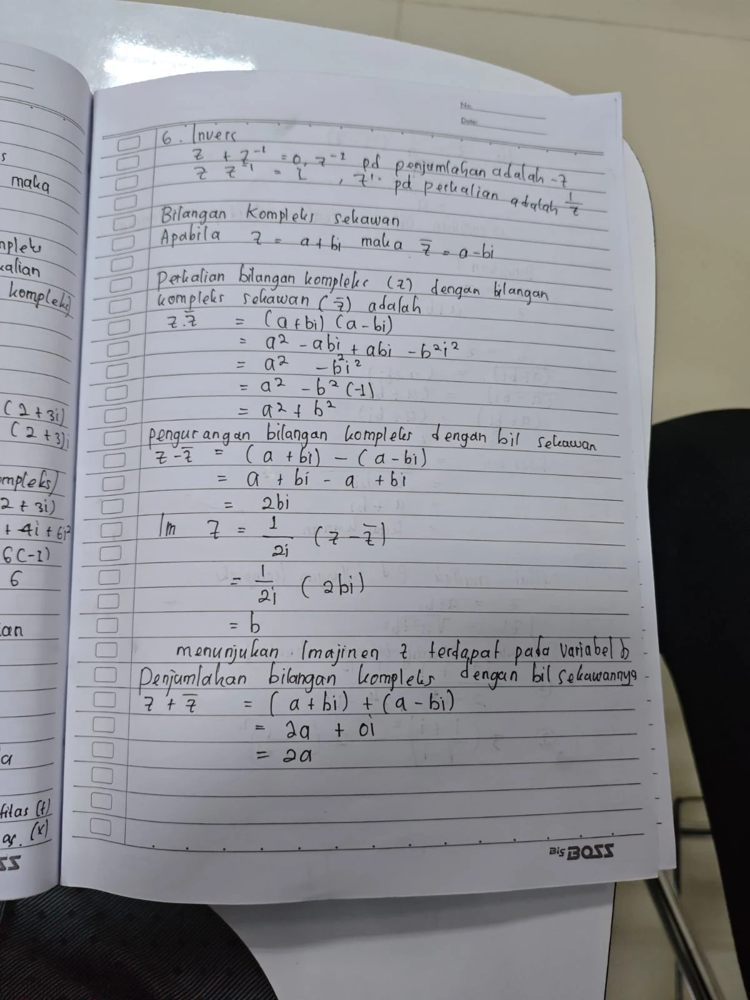
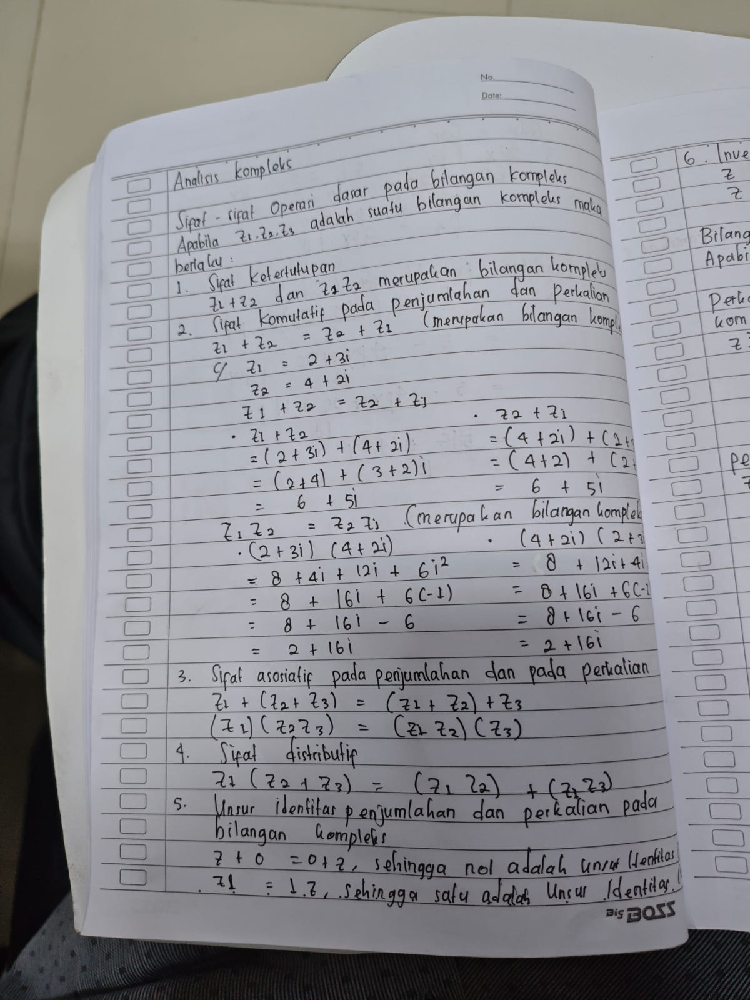
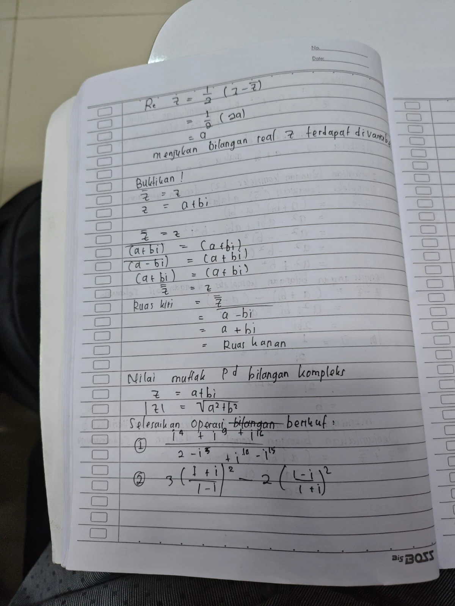
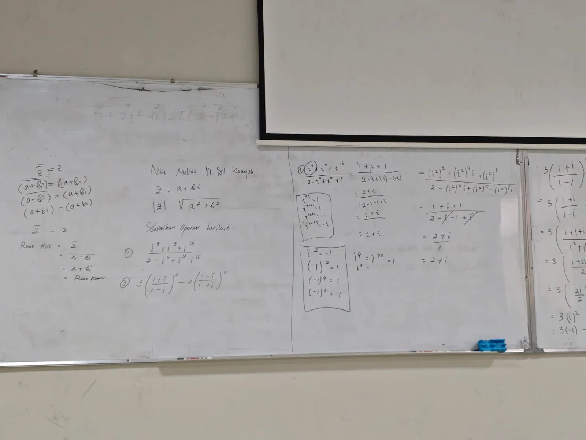
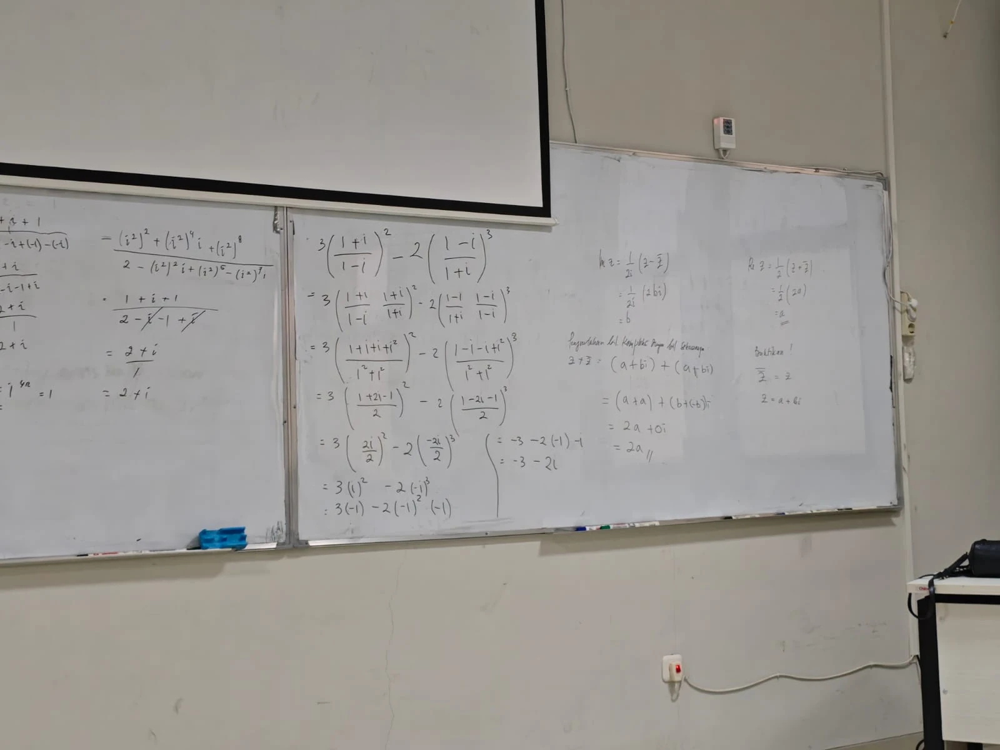

1. Sifat-Sifat Operasi Dasar pada Bilangan Kompleks
Apabila \(z_1, z_2, z_3\) adalah bilangan kompleks, maka berlaku sifat-sifat berikut. Sifat-sifat inilah yang membuat \(\mathbb{C}\) berperilaku "wajar" seperti bilangan real ketika dihitung.
Sifat 1 — Ketertutupan
\(z_1 + z_2\) dan \(z_1 z_2\) tetap merupakan bilangan kompleks.
Artinya: menjumlahkan atau mengalikan dua bilangan kompleks tidak akan pernah membawa kita keluar dari \(\mathbb{C}\).
Sifat 2 — Komutatif pada penjumlahan dan perkalian
Komutatif penjumlahan:
Komutatif perkalian:
Kedua urutan memberi hasil sama: \(6+5i\) dan \(2+16i\). ✓
Sifat 3 — Asosiatif
Pengelompokan boleh dipindah; hasilnya tidak berubah.
Sifat 4 — Distributif
Sifat 5 — Unsur identitas
Jadi 0 adalah unsur identitas penjumlahan dan 1 adalah unsur identitas perkalian.
Sifat 6 — Invers
Invers perkalian hanya ada bila \(z \neq 0\).
2. Bilangan Kompleks Sekawan (Konjugat)
Yang berubah hanya tanda bagian imajinernya.
A. Perkalian \(z\) dengan sekawannya
Suku \(-abi\) dan \(+abi\) saling menghapus, sehingga hasilnya selalu bilangan real. Inilah alasan sekawan dipakai untuk merasionalkan penyebut pada pembagian (Pertemuan 03).
B. Pengurangan \(z\) dengan sekawannya
Menunjukkan bahwa bagian imajiner \(z\) terdapat pada variabel \(b\).
C. Penjumlahan \(z\) dengan sekawannya
Menunjukkan bahwa bagian real \(z\) terdapat pada variabel \(a\).
Pada salah satu lembar catatan tertulis \(\operatorname{Re} z = \tfrac{1}{2}(z - \bar z)\). Yang benar adalah tanda tambah, sebagaimana tertulis di papan tulis:
Cara mengingatnya: tambah menghapus \(i\) (sisa bagian real), kurang menghapus bagian real (sisa bagian imajiner). Karena itu rumus \(\operatorname{Im} z\) memakai pembagi \(2i\), bukan \(2\) — supaya \(i\)-nya ikut hilang.
| Operasi dengan sekawan | Hasil | Jenis hasil |
|---|---|---|
| \(z \cdot \bar z\) | \(a^2 + b^2\) | real, tidak negatif |
| \(z + \bar z\) | \(2a\) | real |
| \(z - \bar z\) | \(2bi\) | imajiner murni |
| \(\tfrac{1}{2}(z+\bar z)\) | \(a = \operatorname{Re} z\) | real |
| \(\tfrac{1}{2i}(z-\bar z)\) | \(b = \operatorname{Im} z\) | real |
3. Pembuktian Sifat Sekawan
Bukti 1 — \(\overline{\overline{z}} = z\)
Sekawan dari sekawan mengembalikan bilangan semula. Dibuktikan dengan memulai dari ruas kiri:
Secara gambar: mencerminkan titik terhadap sumbu real dua kali akan mengembalikannya ke posisi awal.
Bukti 2 — kapan \(\bar z = z\)?
\(\bar z = z\) hanya berlaku bila \(b = 0\), yaitu ketika \(z\) sesungguhnya bilangan real. Jadi pernyataan ini bukan berlaku untuk semua \(z\), melainkan menjadi ciri pengenal bilangan real di dalam \(\mathbb{C}\): sebuah bilangan kompleks adalah real jika dan hanya jika ia sama dengan sekawannya. Berbeda dengan Bukti 1 yang berlaku untuk semua \(z\).
4. Nilai Mutlak (Modulus) pada Bilangan Kompleks
Perhatikan kaitannya dengan bagian 2A: karena \(z\bar z = a^2 + b^2\), maka \(|z| = \sqrt{z \bar z}\) dan \(|z|^2 = z\bar z\). Arti geometrinya — panjang panah \(z\) di bidang — dibahas pada pertemuan berikutnya.
5. Latihan yang Dibahas di Papan Tulis
Dua soal berikut dikerjakan bersama di kelas. Kuncinya sama: sederhanakan pangkat \(i\) lebih dulu.
Cara pakainya: bagi pangkatnya dengan 4, lihat sisanya. Sisa 0 → 1, sisa 1 → \(i\), sisa 2 → \(-1\), sisa 3 → \(-i\).
| Pangkat | Dibagi 4 | Sisa | Nilai |
|---|---|---|---|
| \(i^4\) | \(4 = 4(1)\) | 0 | \(1\) |
| \(i^9\) | \(9 = 4(2)+1\) | 1 | \(i\) |
| \(i^{16}\) | \(16 = 4(4)\) | 0 | \(1\) |
| \(i^5\) | \(5 = 4(1)+1\) | 1 | \(i\) |
| \(i^{10}\) | \(10 = 4(2)+2\) | 2 | \(-1\) |
| \(i^{15}\) | \(15 = 4(3)+3\) | 3 | \(-i\) |
Perhatikan penyebutnya: \(-i\) dan \(+i\) saling menghapus, menyisakan \(2 - 1 = 1\).
Pangkat genap dapat dipecah lewat \(i^2 = -1\), lalu dipakai \((-1)^{\text{genap}} = 1\) dan \((-1)^{\text{ganjil}} = -1\):
Hasilnya sama. Cara pertama (sisa bagi 4) lebih cepat untuk pangkat besar.
Penyebutnya \((1-i)(1+i) = 1 - i^2 = 1 + 1 = 2\). Kedua pecahan ternyata menyederhana menjadi \(i\) dan \(-i\) — jauh lebih mudah dipangkatkan.
Rinciannya: \(i^3 = -i\), sehingga \((-i)^3 = (-1)^3 \cdot i^3 = (-1)(-i) = i\).
Di lembar catatan, suku kedua tertulis berpangkat 2, sedangkan di papan tulis berpangkat 3. Keduanya memberi jawaban berbeda, jadi perlu dipastikan mana yang dimaksud dosen:
Jawaban akhir di papan tulis adalah \(-3-2i\), yang sesuai dengan pangkat 3. Jadi versi papan tulis yang dipakai di catatan ini.
6. Rangkuman Pertemuan 04
| Pokok bahasan | Inti |
|---|---|
| Sifat operasi dasar | Ketertutupan, komutatif, asosiatif, distributif, identitas (0 dan 1), invers (\(-z\) dan \(1/z\)) |
| Sekawan | \(z = a+bi \Rightarrow \bar z = a - bi\) |
| Hasil kali dengan sekawan | \(z\bar z = a^2 + b^2\) — selalu real |
| Jumlah & selisih | \(z + \bar z = 2a\); \(z - \bar z = 2bi\) |
| Bagian real & imajiner | \(\operatorname{Re} z = \tfrac12(z+\bar z)\); \(\operatorname{Im} z = \tfrac{1}{2i}(z-\bar z)\) |
| Sifat sekawan | \(\overline{\overline z} = z\) selalu benar; \(\bar z = z\) hanya bila \(z\) real |
| Nilai mutlak | \(|z| = \sqrt{a^2+b^2} = \sqrt{z \bar z}\) |
| Pangkat \(i\) | Berulang tiap 4: \(1,\ i,\ -1,\ -i\) — pakai sisa bagi 4 |
7. Dokumentasi Catatan Asli
Arsip lembar catatan tulis tangan yang diambil selama perkuliahan:



Foto papan tulis

